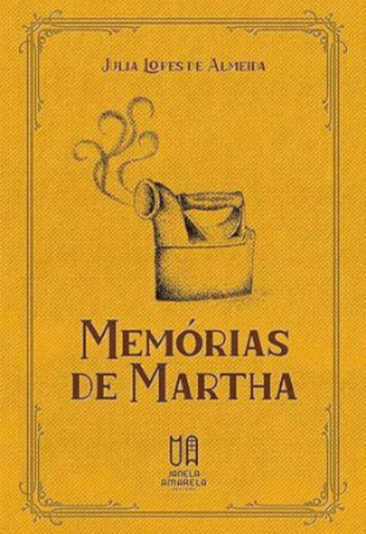
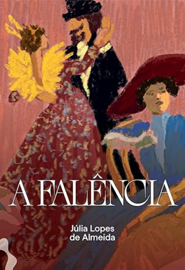

Júlia Lopes de Almeida
Biografia
Júlia Lopes de Almeida nasceu em 24 de setembro de 1862. Filha de ricos cultos, mudou-se para Campinas numa tenra idade, tornando-se escritora do jornal A Gazeta de Campinas com 19 anos. Devido ao domínio masculino na escrita de textos literários, escrevia versos às escondidas. Em 1886, mudou-se para Lisboa, em Portugal, onde conheceu e casou-se com o poeta Filinto de Almeida. Seu primeiro livro, Contos Infantis, foi lançado no mesmo ano — fazendo da autora uma importante peça na concretização da literatura infantil brasileira. Em 1887, publicou Traços e Iluminuras, uma obra para adultos. Finalmente, em 1888, expõe seu primeiro romance, “Memórias de Martha”. Representante do Realismo e do Naturalismo, lutava por diversas causas sociais, como os direitos das mulheres, o divórcio, o acesso ao voto, o abolicionismo, a república e os direitos civis.

Apesar de seu caráter indispensável para a criação da Academia Brasileira de Letras (ABL), seu nome foi excluído da lista de integrantes por ser mulher, expressando a misoginia do período. Desta maneira, seu marido ocupou sua cadeira. Em 1906, publicou o livro “Damas e Donzelas”, onde as mulheres ocupavam o papel de protagonistas das próprias histórias. Dois anos depois da saída de seu último romance, A Casa Verde, Júlia faleceu no Rio de Janeiro, sendo a causa da morte a malária.
A escritora foi esquecida durante um longo período por grande parte dos críticos literários, sendo reconhecida novamente apenas após 1980, por meio de seu livro mais notável, “A Falência”, ilustrando a decadência da elite à época.
Obras
O principal de sua literatura infantil:
— Contos Infantis: Sua obra mais marcante no gênero infanto-juvenil, centra-se num conjunto de contos curtos — 31 em verso, 27 em prosa — os quais visam a propagar ideais morais e religiosos simples por meio de uma narrativa explícita de fatos, tratando de emoções e eventos que vão da fúria ao cuidado com animais. O ponto de vista da narração alterna entre a 3º pessoa, da perspectiva adulta e professoral, e a 1º pessoa, da própria visão da criança ou de um antropomorfo, mas sempre como expressões de um discurso maduro. Apesar da presença de animais, a estrutura literária tem como base comportamentos viciosos, caso em que ocorre a punição destes, e ações virtuosas, onde o hábito é elogiado e serve como exemplo. Assim, o comportamento infantil é visto como moldável, necessitando de instruções para produzir indivíduos inteligentes, amorosos, obedientes, clementes. Até mesmo o padrão linguístico, culto, objetiva reproduzir a linguagem esperada e valorizada durante o período.
Ao final, todas as seções do livro contêm perguntas temáticas que se ligam ao tema proposto e às áreas acadêmicas do ambiente escolar, como o civismo ou a História, sendo pioneiro para o estabelecimento da cultura infanto-juvenil nacional.
Principais Romances:
— Memórias de Martha: Descreve a vida de uma jovem desde sua infância até a idade adulta, sendo narrada pela própria Martha, já madura. A história parte de condições sociais e naturais limitadas, as quais determinam o futuro da personagem, demonstrando o pessimismo bastante típico do gênero; o cortiço é um lugar cruel que condiciona seu futuro. Assim, embora consiga ascender social e economicamente falando, a morte de sua mãe e um casamento realizado com segundas intenções demarcam os limites de sua ambição, demonstrando não uma inventividade ilimitada do sujeito, mas sua adaptação ao ambiente.
Em suma, é bastante semelhante ao Bildüngsroman, isto é, romance de formação europeu, fornecendo-nos uma história de desenvolvimento do caráter e valores de uma mulher autônoma, capaz de criar-se como uma obra de arte.
— A Falência: Seu romance mais famoso, foi esquecido logo após um período de intenso sucesso em seu lançamento. Retrata questões sociais e econômicas do período, destacando-se neste quesito sobre seus outros livros. A história centra-se sobre a família de Francisco Teodoro, um comerciante português o qual viajou ao Brasil e fez fortuna a partir do comércio de café. Empregados e amigos dos familiares também possuem importante papel no estabelecimento da narrativa.
A perspectiva de mundo da autora coloca a elite como alienada e indiferente à situação do povo, representando-a sob a figura de Gervásio, oposto em suas atitudes a Francisco por sua criação na alta casta.
Além disso, a crítica à misoginia daquele mundo reflete-se ostensivamente sob as reações a um feminicídio, originado por um caso de traição entre Catarina e o Capitão Rino. Enquanto o filho do casal é capaz de exilar-se daquele mundo em razão de sua autonomia, a filha tem de sobreviver na mesma casa que seu pai com sua segunda esposa, perpetuando um ciclo de violência doméstica.
Por fim, é imperioso considerar A Falência como mais um exemplo do trato inovador da escritora dado à mulher. Estas, independentemente do domínio masculino, mostram-se interessantes, complexas e capazes de inventividade, força e liberdade, desafiando os preconceitos de seu século.

Textos escolhidos
“Nos tempos antigos, a mulher era calma, submissa, pacífica e retraída; mas seria tudo isso por ter mais bom senso, mais felicidade e menos ambição? Não me parece. O motivo devia ser outro; o motivo devia de estar na atmosfera que a envolvia e em que não existia nenhum elemento agitador. Não somos nós que mudamos os dias, são os dias que nos mudam a nós. Tudo se transforma, tudo acaba, tudo recomeça, criado pelo mesmo princípio, destinado para o mesmo fim. Nascemos, morremos e no intervalo de uma outra ação, vivemos a vida que nosso tempo nos impõe. O que ele impõe hodiernamente à mulher é o desprendimento dos preconceitos, a luta, sempre dolorosa, pela existência, o assalto às culminâncias em que os homens dominam e de onde a repelem. Mas, seja qual for a guerra que lhe façam, o feminismo vencerá, porque não nasceu da vaidade, mas da necessidade que obriga a triunfar.”
— Júlia Lopes de Almeida, “Livro das Donas e Donzelas”.
Referências bibliográficas
----- Colocar as fontes -----